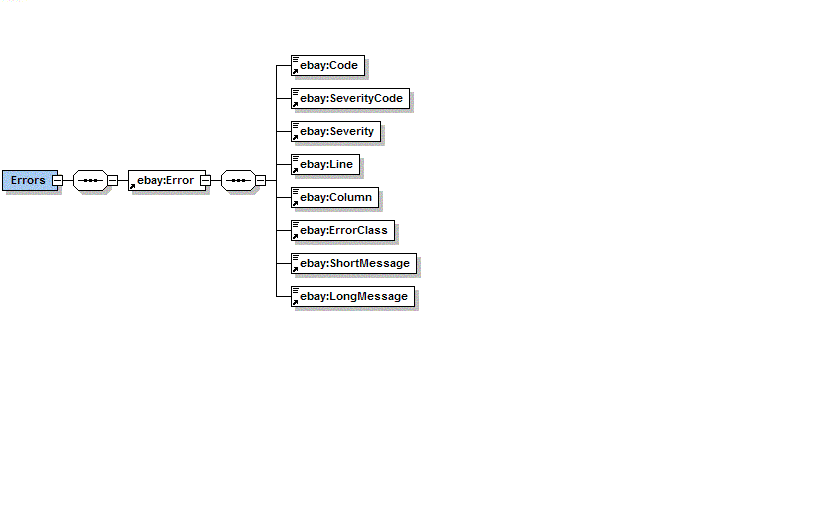

Using the EBay Item Information Control
Before you can use the EBay control, you need to register with EBay
developers program and obtain login credentials. You need to configure
the EBay
Control with these credentials, as described in the section on configuring the EBay Control.
The EBay Control provides a single method for the item information. The
only
essential parameter to this method is the item id, as shown below.
Invoking the control
The ebay item information method is invoked as follows:
String itemId = "4500589265";
com.bea.powertoys.ebay.EBayXmlResponse result = control.getItem(itemId);
com.bea.powertoys.ebay.EBayDocument.EBay eBay = result.getEBay();
Using the results
The 'com.bea.powertoys.ebay.EBayDocument.EBay' is an XMLBean build
directly from the EBay schema (the the schema was generated from the
ebay response). The most significant information will be
related here to get you started.
The EBay XMLBean contains two significant elements. The
first is the Item which contains data about a item at EBay. The
second significant element is
Errors, which contains the information related to
the errors, which might occur due to various reasons.
Getting the Item Information
The most significant element in the EBay XMLBean is the Item. It
is obtained as follows:
com.bea.powertoys.ebay.ItemDocument.Item item = eBay.getItem();
Item
element contains infromation about Item Properties, Category
Information, Bid Information, Pricing
Information, Shipping Information, Seller Information etc related to
the item. Its beyond the scope of this help to introduce each an every
information returned by EBay. For a complete detail about item
information returned, please
refer to the online API and their responses at EBay developers program.
Checking the Errors from the response
The Errors are obtained as follows:
com.bea.powertoys.ebay.ErrorsDocument.Errors errors = eBay.getErrors();
The Errors represents the following XML Schema fragment:

Errors contain Error, and it contains all the details about the error
e.g. Code, ShortMessage etc. If there were no Errors in the response
then the request was successful,
otherwise it was not.
The Java Page Flow sample that accompanies the EBay Control
demonstrates
how navigate these XMLBeans in a JSP.
For addtional information, please refer to EBay Developers Program, API
and their responses are available here
.